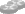

Introduction
If your devices are configured with SNMP location information according to the
NeDi homepage, you can browse your network in a site based, tabular fashion.
Usage
- If Google Maps integration is enabled in User-Profile, static maps are displayed instead of icons.
If the locations are added with LocEd and provide coordinates, they'll be used rather than the info from the switch
and a marker will be shown.
- Clicking on location names will list all matching devices.
- Location icons take you down a level, device icons to Devices-Status.
- Use
 to get back to the regions or
to get back to the regions or  for the cities level.
for the cities level.
 toggles displaying non-SNMP devices.
toggles displaying non-SNMP devices.
- If photos (region-city-building-floor[something].jpg) are found in html/log they can be accessed from the floor label.
- indicates a single and  several L3 devices in a building.